Real Time Presence Platform System Design
User Online Status Indicator
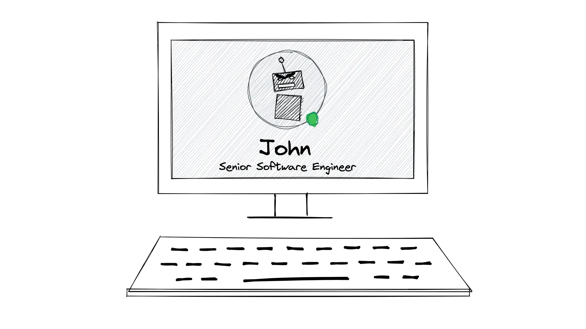
The target audience for this article falls into the following roles:
- Tech workers
- Students
- Engineering managers
Disclaimer: The system design questions are subjective. This article is written based on the research I have done on the topic and might differ from real-world implementations. Feel free to share your feedback and ask questions in the comments.
The system design of the Presence Platform depends on the design of the Real-Time Platform. I highly recommend reading the related article to improve your system design skills.
Download my system design playbook for free on newsletter signup:
What Is the Real-Time Presence Platform?
The presence status is a key feature to make the real-time platform engaging and interactive for the users (clients). In layman’s terms, the presence status shows whether a particular client is currently online or offline. The presence status is popular on real-time messaging applications and social networking platforms such as LinkedIn, Facebook, and Slack 1. The presence status represents the availability of the client for communication on a chat application or a social network.
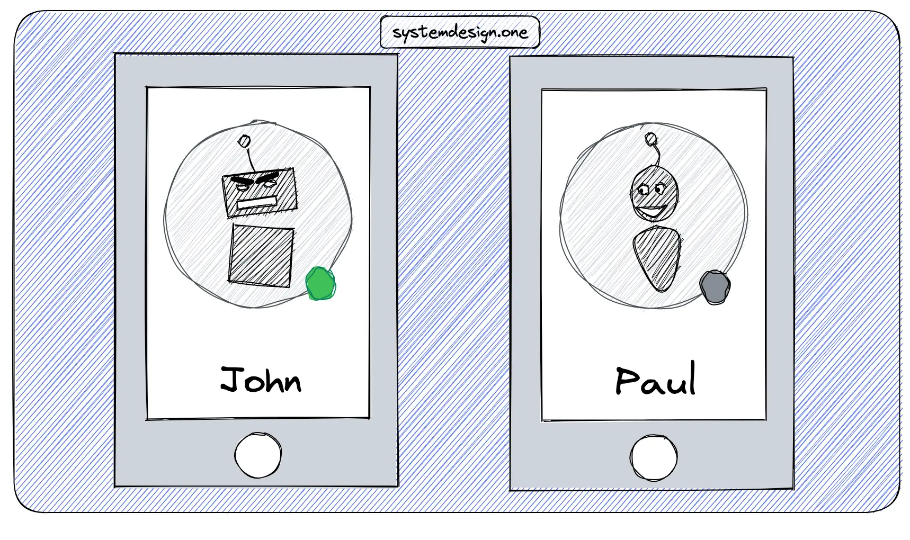
Usually, a green colored circle is shown adjacent to the profile image of the client to indicate the client’s presence status as online. The presence status can also show the last active timestamp of the client 2, 3. The presence status feature offers enormous value on multiple platforms by supporting the following use cases 4:
- enabling accurate virtual waiting rooms for efficient staffing and scheduling in telemedicine
- logging and viewing real-time activity in a logistics application
- identify the online users in a chat application or a multi-player game
- enable monitoring of the Internet of Things (IoT) devices
Terminology
The following terminology might be helpful for you:
- Node: a server that provides functionality to other services
- Data replication: a technique of storing multiple copies of the same data on different nodes to improve the availability and durability of the system
- High availability: the ability of a service to remain reachable and not lose data even when a failure occurs
- Connections: list of friends or contacts of a particular client
How Does the Real-Time Presence Platform Work?
The real-time presence platform leverages the heartbeat signal signal to check the status of the client in real time. The presence status is broadcast to the clients using the persistent server-sent events (SSE) connections on the real-time platform.
Questions to Ask the Interviewer
Candidate
- What are the primary use cases of the system?
- Are the clients distributed across the globe?
- What is the total count of clients on the platform?
- What is the average amount of concurrent online clients?
- How many times does the presence status of a client change on average during the day?
- What is the anticipated read: write ratio of a presence status change?
- Should the client be able to see the list of all online connections?
Interviewer
- Clients can view the presence status of their friends (connections) in real-time
- Yes
- 700 million
- 100 million
- 10
- 10: 1
- Yes, the connections should be grouped into lists, and the online connections should be displayed at the top of the list
Requirements
Functional Requirements
- Display the real-time presence status of a client
- Display the last active timestamp of an offline client
- The connections should be able to see the presence status of the client
- The client should be able to view the list of online clients (connections)
Non-Functional Requirements
- Scalable
- Reliable
- High availability
- Low latency
Real-Time Presence Platform API
The connections (subscribers) should receive real-time updates on the online status of the client (publisher). The persistent SSE connections on the real-time platform can be used to broadcast the changes in the presence status using a JSON payload 3. The fields of the JSON payload for broadcasting the presence status changes are the following 4:
| Field | Description |
|---|---|
| event | type of event |
| user_id | ID of the user (publisher) |
| timestamp | timestamp of event (can be used for last seen) |
The following is a sample payload to broadcast an online event on the presence status:
|
|
The following is a sample payload to broadcast an offline event on the presence status:
|
|
Heartbeat
The heartbeat signal should be connectionless and lightweight for improved performance. Hence, the User Datagram Protocol (UDP) is a natural fit for sending the heartbeat. A low-valued time interval between consecutive heartbeats will result in an increased system load and poor performance. On the contrary, a high-valued time interval between consecutive heartbeats will introduce a delay in detecting the status of the client. Therefore, the interval delay should be finely tuned for efficiency and accuracy 2.
Real-Time Presence Platform Data Storage
The timestamp of the latest heartbeat signal received must be stored in the presence database to identify the last active timestamp of the client. The relational database with support for transactions and atomicity, consistency, isolation, and durability (ACID) compliance can be an overkill for keeping presence status data. The NoSQL database such as Apache Cassandra offers high write throughput at the expense of slower read operations due to the usage of an LSM-based storage engine. Hence, Cassandra cannot be used to store the presence status data.
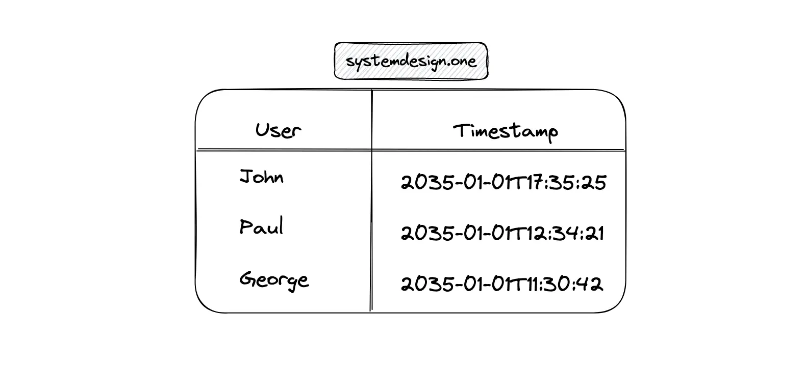
A distributed key-value store that can support both extremely high read and extremely high write operations must be used for the real-time presence database 2. Redis is a fast, open-source, and in-memory key-value data store that offers high throughput read-write operations. Redis can be provisioned as the presence database. The hash data type in Redis will efficiently store the presence status of a client. The hash key will be the user ID and the value will be the last active timestamp.
Further System Design Learning Resources
Download my system design playbook for free on newsletter signup:
Real-Time Presence Platform High-Level Design
A trivial approach to implementing the presence platform is to take advantage of clickstream events in the system. The presence service can track the client status through clickstream events and change the presence status to offline when the server has not received any clickstream events from the client for a defined time threshold. The downside of this approach is that clickstream events might not be available on every system. Besides, the change in the client’s presence status will not be accurate due to the dependency on clickstream events.
Prototyping the Presence Platform With Redis Sets
The sets data type in Redis is an unordered collection of unique members with no duplicates. The sets data type can be used to store the presence status of the clients at the expense of not showing the last active timestamp of the client. The user IDs of the connections of a particular client can be stored in a set named connections and the user IDs of every online user on the platform can be stored in a set named online.
The sets data type in Redis supports intersection operation between multiple sets. The intersection operation between the set online and set connections can be performed to identify the list of connections of a particular client, who is currently online. The following Redis set commands can be useful to prototype the presence platform 5, 6:
| Command | Description |
|---|---|
| SADD | add the user to the online set |
| SISMEMBER | check if the user is online |
| SREM | remove the user from the online set |
| SCARD | fetch the total count of online users |
| SINTER | identify connections who are online |
The set operations such as adding, removing, or checking whether an item is a set member take constant time complexity, O(1). The time complexity of the set intersection is O(n*m), where n is the cardinality of the smallest set and m is the number of sets. Alternatively, the bloom filter or cuckoo filter can be used to reduce memory usage at the expense of approximate results 5.
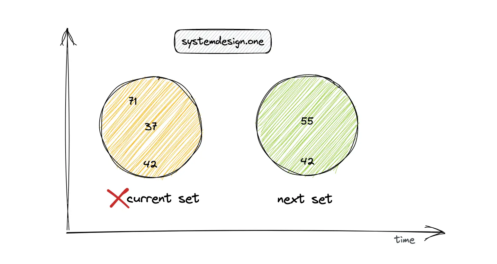
The client-side failures or jittery client connections can be handled through the key expiration pattern. A sliding window of sets with time-scoped keys can be used to implement the key expiration pattern. In layman’s terms, a new set is created periodically to keep track of online clients. In addition, two sets named current and next with distinct expiry times are kept simultaneously in the Redis server.
When a client changes the status to online, the user ID of the particular client is added to both the current set and the next set. The presence status of the client is identified by querying only the current set. The current set is eventually removed on expiry as time elapses. The trivial implementation of the system is the primary benefit of the current architecture with the sliding window key expiration. The limitation of the current prototype is that the status of a client who gets disconnected abruptly is not reflected in real time because the change in presence status depends on the sliding window length 6.
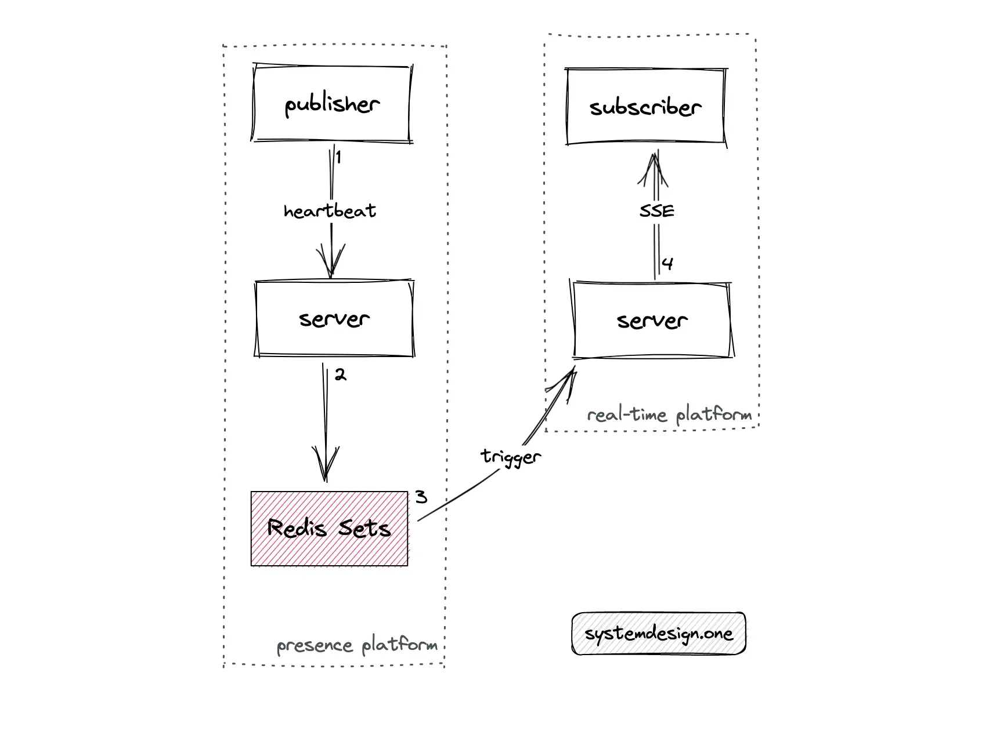
The Redis server can make use of Redis keyspace notifications to notify the clients (subscribers) connected to the real-time platform when the presence status changes. The server can subscribe to any data change events in Redis in near real-time through Redis keyspace notifications. The key expiration in Redis might not occur in real-time because Redis uses either lazy expiration on read operation or through a background cleanup process. The keyspace notification gets only triggered when Redis removes the key-value pair. The limitations with keyspace notifications for detecting changes in presence status are the following 7:
- Redis keyspace notifications consume CPU power
- key expiration by Redis is not real-time
- subscribing to keyspace notifications on the Redis cluster is relatively complex
The heartbeat signal updates the expiry time of a key in the Redis set. The real-time platform can broadcast the change in the status of a particular client (publisher) to subscribers over SSE. In conclusion, do not use the Redis sets approach for implementing the presence platform.
Presence Platform With Pub-Sub Server
The publisher (client) can broadcast the presence status to multiple subscribers through a publish-subscribe (pub-sub) server. The subscriber who was disconnected during the broadcast operation should not see the status history of a publisher when the subscriber reconnects later to the platform.
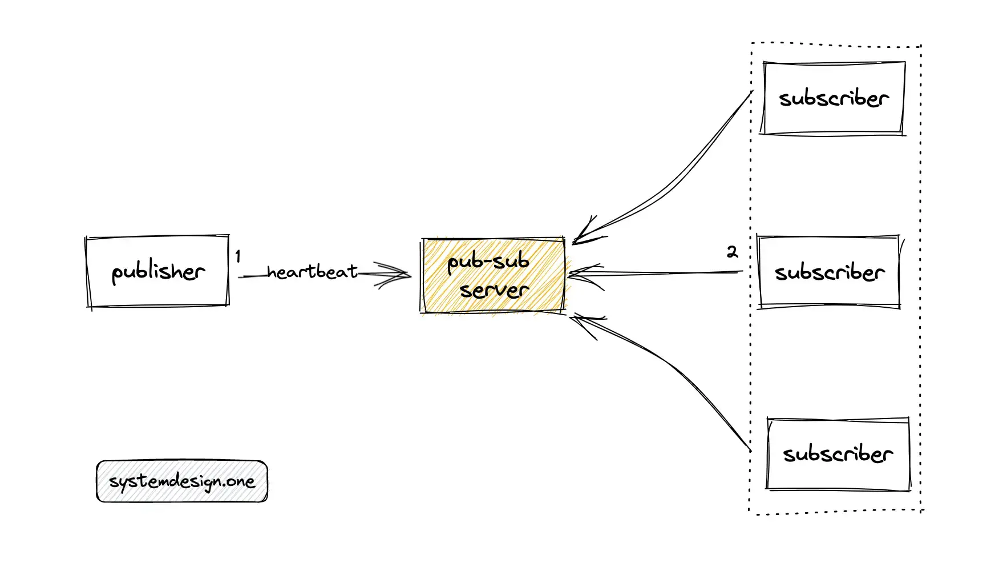
The message bus in the pub-sub server should be configured in fire-and-forget (ephemeral) mode to ensure that the presence status history is not stored to reduce storage needs. There is a risk with the fire-and-forget mode that some subscribers might not receive the changes in client status. Redis pub-sub or Apache Kafka can be configured as the message bus. The limitations of using the pub-sub server in the ephemeral mode are the following:
- no guaranteed at least one-time message delivery
- degraded latency because consumers use a pull-based model
- operational complexity of message bus such as Apache Kafka is relatively high
In summary, do not use the pub-sub approach for implementing the presence platform.
An Abstract Presence Platform
The real-time platform is a critical component for the implementation of the presence feature. Both the publisher and the subscriber maintain a persistent SSE connection with the real-time platform. The bandwidth usage to fan out the client’s presence status can be reduced by reusing the existing SSE connection.
Simply put, the real-time platform is a publish-subscribe service for streaming the client’s presence status to the subscribers over the persistent SSE connection 2, 8, 9, 10. The presence platform should track the following events to identify any change in the status of the client 3, 4:
| Event | Description |
|---|---|
| online | published when a client connects to the platform |
| offline | published when a client disconnects from the platform |
| timeout | published when a client is disconnected from the platform for over a minute |
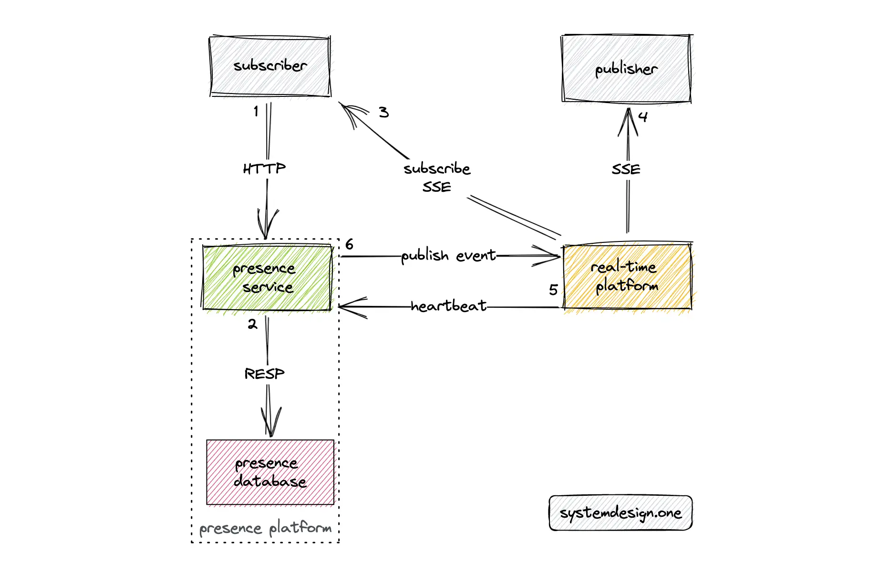
The presence status of a client connected to the real-time platform must be shown online. The client should also subscribe to the real-time platform for notifications on the status of the client’s connections (friends). At a very high level, the following operations are executed by the presence platform 2:
- the subscriber (client) queries the presence service to fetch the status of a publisher over the HTTP GET method
- the presence service queries the presence database to identify the presence status
- the client subscribes to the status of a publisher through the real-time platform and creates an SSE connection
- the publisher comes online and makes an SSE connection with the real-time platform
- the real-time platform sends a heartbeat signal to the presence service over UDP
- the presence service queries the presence database to check if the publisher just came online
- the presence service publishes an online event to the real-time platform over the HTTP PUT method
- the real-time platform broadcasts the change in the presence status of the publisher to subscribers over SSE
The presence service should return the last active timestamp of an offline publisher by querying the presence database. In synopsis, the current architecture can be used to implement a real-time presence platform.
Further System Design Learning Resources
Download my system design playbook for free on newsletter signup:
Design Deep Dive
How Does the Presence Platform Identify Whether a User Is Online?
The real-time platform can be leveraged by the presence platform for streaming the change in status of a particular client to the subscribers in real-time 2, 8, 9, 10. The subscriber establishes an SSE connection with the real-time platform and also subscribes to any change in the status of the connections (clients). The heartbeat signal is used by the presence platform to detect the current status of a client (publisher). The presence platform publishes an online event to the real-time platform for notifying the subscribers when the client status changes to online 4. The client who just came online can query the presence platform through the Representational state transfer (REST) API to check the presence status of a particular client.
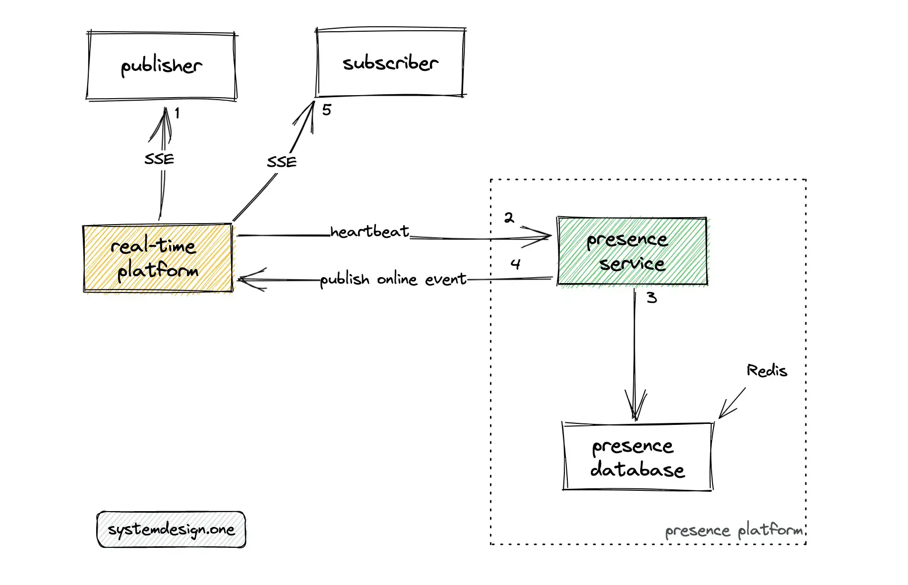
The following operations are executed by the presence platform for notifying the subscribers when a client changes the status to online 2:
- The publisher (client) creates an SSE connection with the real-time platform
- The real-time platform sends a heartbeat signal to the presence service over UDP
- The presence service queries the presence database to check whether an unexpired record for the publisher exists in the database
- The presence service infers that the publisher just changed the status to online if there is no database record or if the previous record has expired
- The presence platform publishes an online event to the real-time platform over the HTTP PUT method
- The real-time platform broadcasts the change in the presence status to subscribers over SSE
- The presence service subsequently inserts a record in the presence database with an expiry value slightly greater than the timestamp for the successive heartbeat
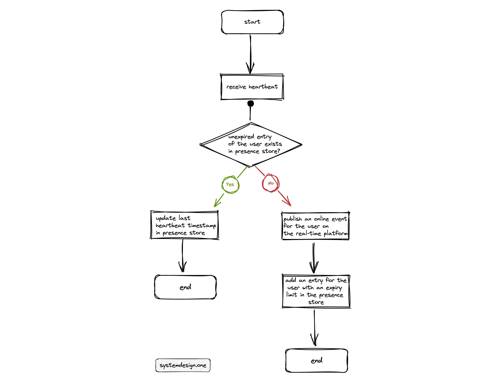
The presence service only updates the last active timestamp of the publisher in the presence database when an unexpired record already exists in the presence database because there was no change in the status of the publisher.
How Does the Presence Platform Identify When a User Goes Offline?
When the publisher doesn’t reconnect to the real-time platform within a defined time interval, the presence platform should detect the absence of the heartbeat signals. The presence platform will subsequently publish an offline event over HTTP to the real-time platform for broadcasting the change in presence status to all the subscribers. The offline event must include the last active timestamp of the publisher 2.
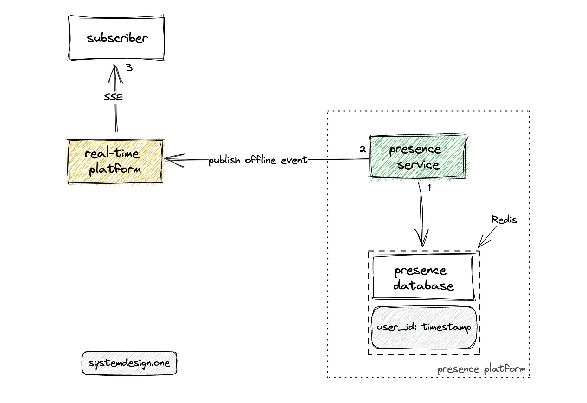
The web browser can trigger an unload event to change the presence status when the publisher closes the application 4. A delayed trigger can be configured on the presence service to identify the absence of a heartbeat signal. The delayed trigger will guarantee the accuracy of detection in the status changes. The delayed trigger must schedule a timer that gets executed when the time interval for the successive heartbeat elapses. The delayed trigger execution should query the presence database to check whether the database record for a specific publisher has expired. The following operations are executed by the presence platform for notifying the subscribers when a client changes the status to offline 2:
- The delayed trigger queries the presence database to check whether the database record of the publisher has expired
- The presence service publishes an offline event to the real-time platform over HTTP when the database record has expired
- The real-time platform broadcasts the change in status along with the last active timestamp to the subscribers over SSE
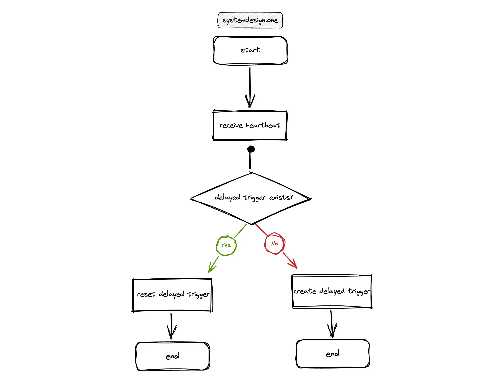
The presence service creates a delayed trigger if the trigger doesn’t already exist when the heartbeat is processed. The delayed trigger should be reset in case the trigger already exists 2.
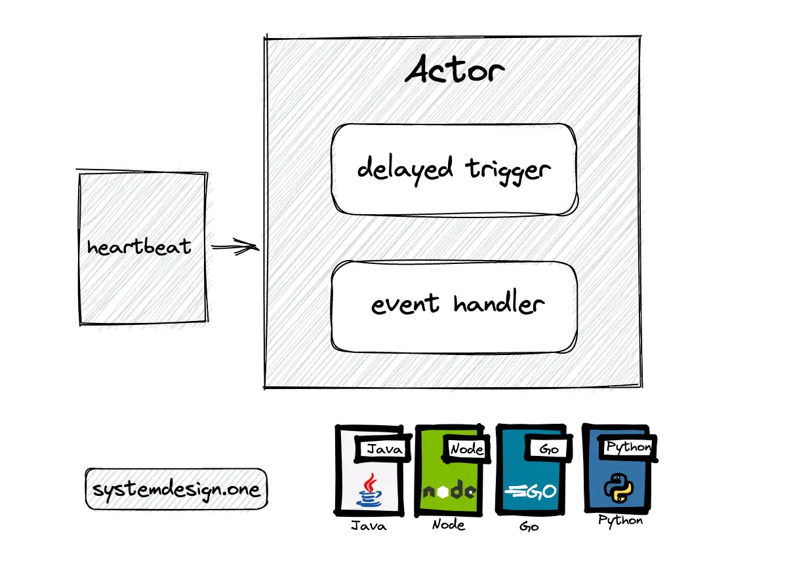
The actor model can be used to implement the presence service for improved performance. An actor is an extremely lightweight object that can receive messages and take actions to handle the messages. A thread will be assigned to an actor when a message must be processed. The thread is released once the message is processed and the thread is subsequently assigned to the next actor. The total count of actors in the presence platform will be equal to the total count of online users. The lifecycle of an actor depends on the online status of the corresponding client. The following operations are executed when the presence service receives a heartbeat signal 2:
- create an actor in the presence service if an actor doesn’t already exist for the particular client
- set a delayed trigger on the actor for publishing an offline event when the timeout interval elapses
- the actor publishes an offline event when the delayed trigger gets executed
Every delayed trigger should be drained before decommissioning the presence service for improved reliability of the real-time presence platform.
How to Handle Jittery Connections of the Client?
The client signing off or timing out will likely have the same status on a chat application. Therefore, the offline and timeout actions of a client can be indicated by the offline event. In IoT at transportation companies, a longer time interval must be set for the timeout to prevent excessive offline events from being published because the region of IoT operation might have poor network connectivity. On the contrary, the IoT in a home security system needs a very short timeout interval for alerts when the monitoring service is down. The offline event can be published by the presence platform for the following reasons 4:
- the client lost internet connectivity
- the client left the platform abruptly
The clients connected to the real-time platform through mobile devices are often on unpredictable networks. The client might disconnect and reconnect to the platform randomly. The presence platform should be able to handle jittery client connections gracefully to prevent constant fluctuations in the client’s presence status, which might result in a poor user experience and unnecessary bandwidth usage 2.
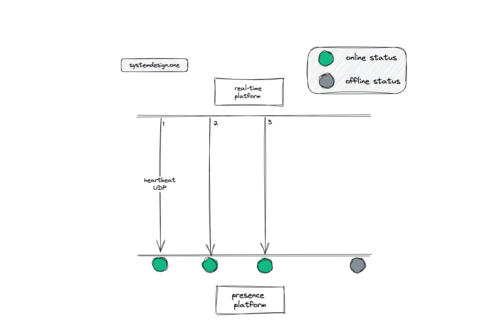
The real-time platform sends periodic heartbeat signals to the presence platform with the user ID of the connected publisher and a timestamp of the heartbeat in the payload. The presence platform will show the status of the client online when periodic heartbeats are received. The presence status can be kept online although the client gets disconnected from the network as long as the successive heartbeat is received by the presence platform within the defined timeout interval 2, 11.
What Is the Subscribe Workflow and Publish Workflow for the Real-Time Platform?
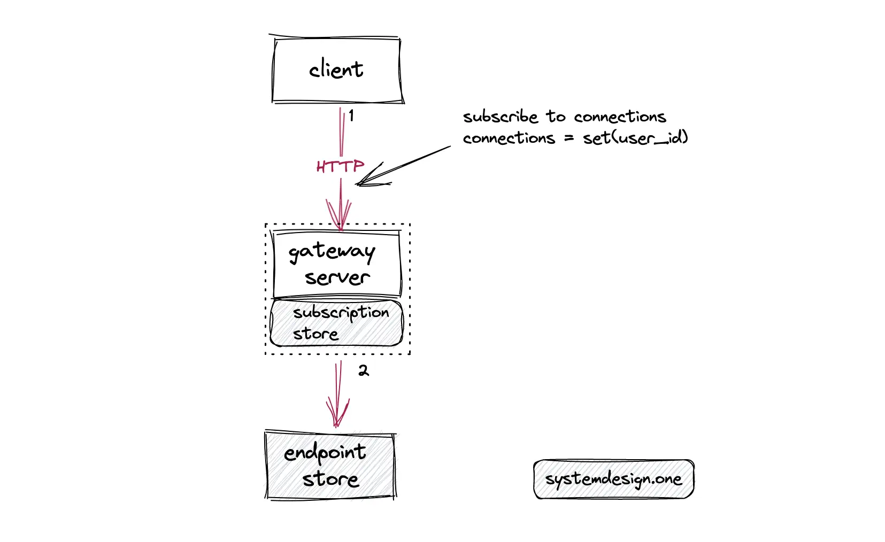
The following operations are executed for the subscription when the client connects to the real-time platform 10:
- the client subscribes to the gateway server over HTTP
- the gateway stores the subscription associations on the in-memory subscription store
- the gateway server makes a subscription request on the endpoint store by creating an entry on the key-value store
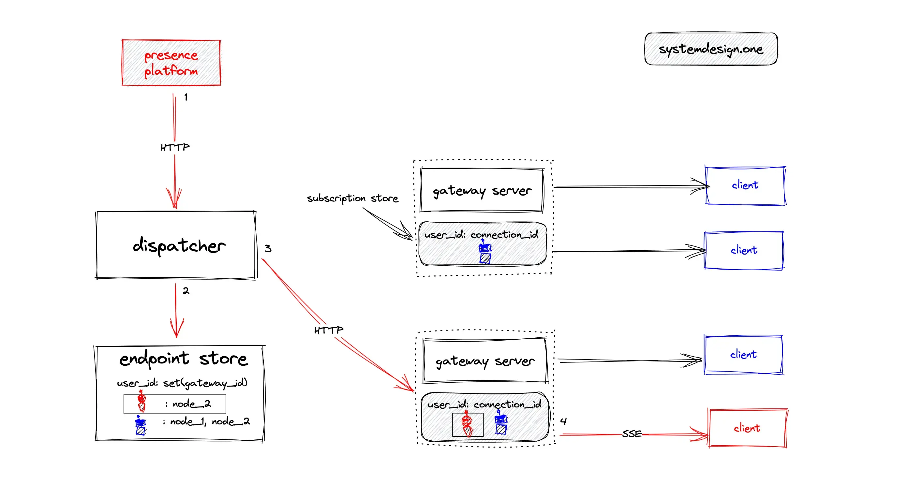
The following operations are executed when the publisher with a user ID red changes the presence status 10:
- the dispatcher queries the external endpoint store to identify the set of subscribed gateway servers on the status of the publisher with red as the user ID
- the dispatcher publishes the status change to the set of subscribed gateway servers over the HTTP
- the gateway server queries the local in-memory subscription store to identify the clients subscribed to the status change of the publisher with red as the user ID
- the gateway server broadcasts the status change to all the subscribed clients over SSE
What Is the Cross-Data Center Publish Workflow for Presence Status Change?
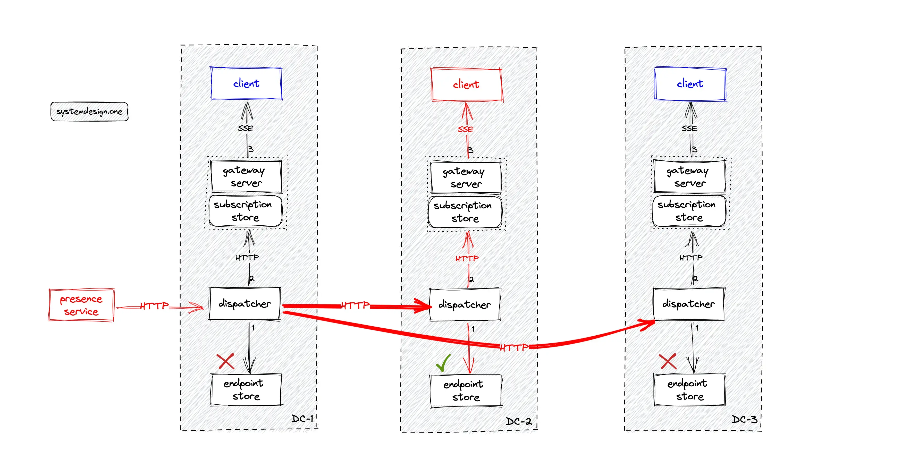
The following operations are executed when the presence status of a client changes 10:
- the dispatcher in the local data center broadcasts the status change to dispatchers on peer data centers over HTTP
- the dispatcher queries the local endpoint store to check if there are any subscribed gateway servers on the status change of the particular publisher
- the subscribed gateway server queries the local in-memory subscription store to identify the subscribed clients
- the gateway server fans out the status change to the subscribed clients over SSE
Scalability
The serverless functions can be used to implement presence service for scalability and reduced operational complexity. The REST API endpoints of the platform can also be implemented using serverless functions for easy horizontal scaling 4, 12.
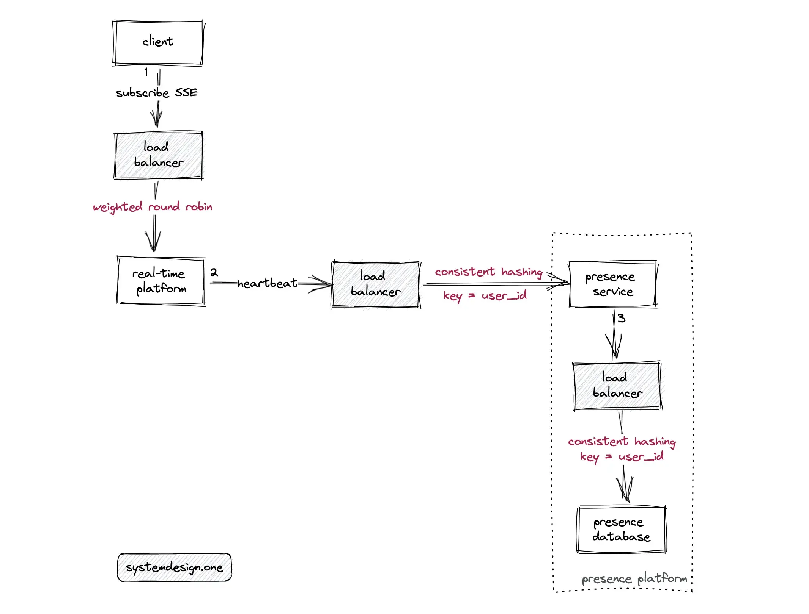
The presence status including the last active timestamp of the clients is stored in the distributed presence database. The presence service should be replicated for scalability and high availability. Consistent hashing can be used to redirect the heartbeats from a particular client to the same set of nodes (sticky routing) of the presence service to prevent the creation of duplicate delayed triggers 2.
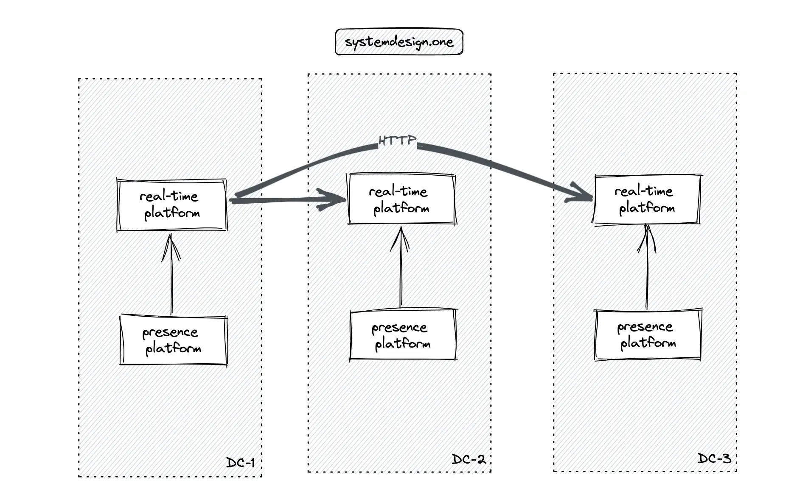
The presence platform should be replicated across data centers for scalability, low latency, and high availability. The presence database can make use of conflict-free replicated data type (CRDT) for active-active geo-distribution.
Reliability
The presence database (Redis) should not lose the current status of the clients on a node failure. The following methods can be used to persist Redis data on persistent storage such as solid-state disk (SSD) 13, 14:
- Redis Database (RDB) persistence performs point-in-time snapshots of the dataset at periodic intervals
- Append Only File (AOF) persistence logs every write operation on the server for fault-tolerance
The RDB method is optimal for disaster recovery. However, there is a risk of data loss on unpredictable node failure because the snapshots are taken periodically. The AOF method is relatively more durable through an append-only log at the expense of larger storage needs. The general rule of thumb for improved reliability with Redis is to use both RDB and AOF persistence methods simultaneously 13.
Latency
The network hops in the presence platform are very few because the client SSE connections on the real-time platform are reused for the implementation of the presence feature. On top of that, the pipelining feature in Redis can be used to batch the query operations on the presence database for reducing the round-trip time (RTT) 15.
Summary
The real-time presence platform might seem conceptually trivial. However, orchestrating the real-time presence platform at scale and maintaining accuracy and reliability can be challenging.
What to learn next?
Download my system design playbook for free on newsletter signup:
License
CC BY-NC-ND 4.0: This license allows reusers to copy and distribute the content in this article in any medium or format in unadapted form only, for noncommercial purposes, and only so long as attribution is given to the creator. The original article must be backlinked.
References
-
Sammy Shreibati, Introducing Active Status on LinkedIn Messaging: See When Your Connections are Available (2017), blog.linkedin.com ↩︎
-
Akhilesh Gupta, Meng Lay, Now You See Me, Now You Don’t: LinkedIn’s Real-Time Presence Platform (2018), engineering.linkedin.com ↩︎
-
What is User Presence? And Why is it Important?, pubnub.com ↩︎
-
Is Anyone Home? An Intro to Presence Webhooks (2020), pubnub.com ↩︎
-
Andrew Brookins, Redis Sets Explained (2022), youtube.com ↩︎
-
Andrew Brookins, Redis Sets Elaborated (2022), youtube.com ↩︎
-
Redis keyspace notifications, redis.io ↩︎
-
Jeff Barber, Building Real-Time Infrastructure at Facebook (2017), usenix.org ↩︎
-
Akhilesh Gupta, Streaming a Million Likes/Second: Real-Time Interactions on Live Video, infoq.com ↩︎
-
Neo Kim, Live Comment System Design (2023), systemdesign.one ↩︎
-
Akhilesh Gupta on the Architecture of LinkedIn’s Real-Time Messaging Platform (2020), infoq.com ↩︎
-
React Native in Real Time: Pub/Sub, Geolocation, Presence (2019), pubnub.com ↩︎
-
Redis persistence, redis.io ↩︎
-
When To Use Redis Persistence (2023), alibabacloud.com ↩︎
-
Redis pipelining, redis.io ↩︎